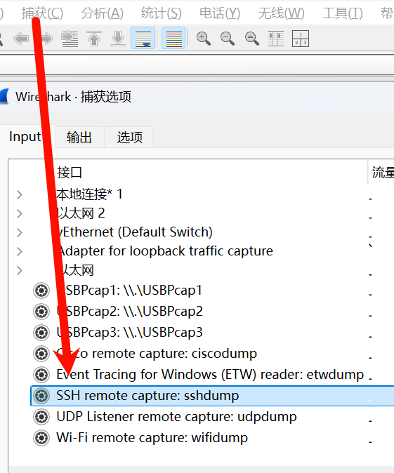
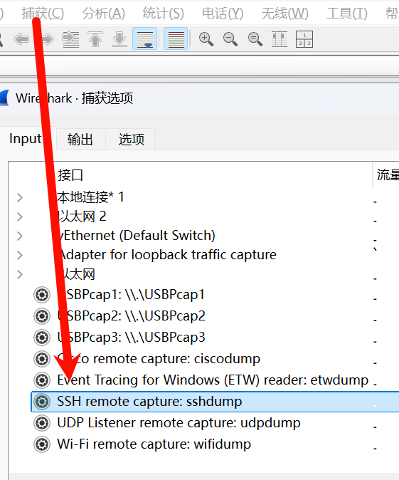

Linux-网络抓包
wireshark
远程抓包
在wireshark的以下两个部分进行抓包，不建议性能分析时进行，在连通性验证时可以使用（ssh传输可能丢包等）  

ssh+tcpdump+wireshark解析
直接抓包解析 1
ssh <ip> 'tcpdump -ni any -s0 -U -w - udp port 53' | wireshark -k -i -
1
ssh -J <jumpsever ip> <ip> 'tcpdump -ni any -s0 -U -w - udp port 53' | wireshark -k -i -
1
ssh <ip> 'tcpdump -ni any -s0 -U -w- udp port 53' > /tmp/packets.pcap
tcpdump
常用抓包指令
过滤tcp flags，比如抓syn报文，看是否能握手成功 1
tcpdump -ni any 'tcp[tcpflags] == tcp-syn'
sar -n ETCP 1看到retrans/s不断上升 1
watch -n 0.1 'ss -tpn state syn-sent'
1
tcpdump -ni any 'tcp[tcpflags] == tcp-syn or tcp[13]=18'
1
tcpdump -ni any 'tcp[tcpflags] == tcp-syn or tcp[13] & 4!=0'
1
tcpdump -ni any 'tcp[tcpflags] == tcp-syn or icmp[0] = 3'
1
tcpdump -ni any '(tcp[tcpflags] == tcp-syn or tcp[13]=18) or tcp[13] & 4!=0 or icmp[0] = 3'
1
2
3tcpdump 'tcp[tcpflags] == tcp-syn'
tcpdump 'tcp[tcpflags] == tcp-rst'
tcpdump 'tcp[tcpflags] == tcp-fin'1
2
3tcpdump less 32
tcpdump greater 32
tcpdump <= 1028080的流量，每个文件最大 100MB，最多保留 10个文件，写满后覆盖最旧的文件 1
tcpdump -i any -C 100 -W 10 -w my_capture.pcap port 8080
10000个发往 80端口的包 1
tcpdump -i any -c 10000 -w http_requests.pcap dst port 80
常用选项
| 参数 | 说明 | 示例 |
|---|---|---|
-i <interface> |
指定抓包网卡。any表示所有网卡。 |
-i any |
port <端口号> |
过滤特定端口的流量（TCP/UDP）。 | port 8080 |
-C <大小> |
按文件大小分割。单位通常为MB（M）。 | -C 100 |
-W <数量> |
限制文件总数，与 -C配合实现循环覆盖。 |
-W 10 |
-w <文件名> |
将抓取的原始数据包写入指定文件。 | -w my_capture.pcap |
-c <数量> |
抓取指定数量的数据包后自动退出。 | -c 10000 |
-s <长度> |
设置每个数据包的抓取长度（快照长度byte），-s 0表示抓取完整数据包。(在长期抓只需要分析报文头很实用) |
-s 0 |
其他选项
Capture Commands
| Command | Example usage | Explanation |
|---|---|---|
-i any |
tcpdump -i any |
Capture from all interfaces; may require superuser (sudo/su) |
-i eth0 |
tcpdump -i eth0 |
Capture from the interface eth0 |
-c count |
tcpdump -i eth0 -c 5 |
Exit after receiving count (5) packets |
-r captures.pcap |
tcpdump -i eth0 -r captures.pcap |
Read and analyze saved capture file captures.pcap |
tcp |
tcpdump -i eth0 tcp |
Show TCP packets only |
udp |
tcpdump -i eth0 udp |
Show UDP packets only |
icmp |
tcpdump -i eth0 icmp |
Show ICMP packets only |
ip |
tcpdump -i eth0 ip |
Show IPv4 packets only |
ip6 |
tcpdump -i eth0 ip6 |
Show IPv6 packets only |
arp |
tcpdump -i eth0 arp |
Show ARP packets only |
rarp |
tcpdump -i eth0 rarp |
Show RARP packets only |
slip |
tcpdump -i eth0 slip |
Show SLIP packets only |
-I |
tcpdump -i eth0 -I |
Set interface as monitor mode |
-K |
tcpdump -i eth0 -K |
Don’t verify checksum |
-p |
tcpdump -i eth0 -p |
Don’t capture in promiscuous mode |
Filter Commands
| Filter expression | Explanation |
|---|---|
src host 127.0.0.1 |
Filter by source IP/hostname 127.0.0.1 |
dst host 127.0.0.1 |
Filter by destination IP/hostname 127.0.0.1 |
host 127.0.0.1 |
Filter by source or destination = 127.0.0.1 |
ether src 01:23:45:AB:CD:EF |
Filter by source MAC 01:23:45:AB:CD:EF |
ether dst 01:23:45:AB:CD:EF |
Filter by destination MAC 01:23:45:AB:CD:EF |
ether host 01:23:45:AB:CD:EF |
Filter by source or destination MAC 01:23:45:AB:CD:EF |
src net 127.0.0.1 |
Filter by source network location 127.0.0.1 |
dst net 127.0.0.1 |
Filter by destination network location 127.0.0.1 |
net 127.0.0.1 |
Filter by source or destination network location 127.0.0.1 |
net 127.0.0.1/24 |
Filter by source or destination network location 127.0.0.1 with the tcpdump subnet mask of length 24 |
src port 80 |
Filter by source port = 80 |
dst port 80 |
Filter by destination port = 80 |
port 80 |
Filter by source or destination port = 80 |
src portrange 80-400 |
Filter by source port value between 80 and 400 |
dst portrange 80-400 |
Filter by destination port value between 80 and 400 |
portrange 80-400 |
Filter by source or destination port value between 80 and 400 |
ether broadcast |
Filter for Ethernet broadcasts |
ip broadcast |
Filter for IPv4 broadcasts |
ether multicast |
Filter for Ethernet multicasts |
ip multicast |
Filter for IPv4 multicasts |
ip6 multicast |
Filter for IPv6 multicasts |
ip src host mydevice |
Filter by IPv4 source hostname mydevice |
arp dst host mycar |
Filter by ARP destination hostname mycar |
rarp src host 127.0.0.1 |
Filter by RARP source 127.0.0.1 |
ip6 dst host mywatch |
Filter by IPv6 destination hostname mywatch |
tcp dst port 8000 |
Filter by destination TCP port = 8000 |
udp src portrange 1000-2000 |
Filter by source TCP ports in 1000–2000 |
sctp port 22 |
Filter by source or destination port = 22 |
Display Commands
| Example | Explanation |
|---|---|
tcpdump -i eth0 -A |
Print each packet (minus its link level header) in ASCII. Handy for capturing web pages. [![Screenshot with ASCII (sudo tcpdump twitter) |
tcpdump -D |
Print the list of the network interfaces available on the system and on which tcpdump can capture packets. |
tcpdump -i eth0 -e |
Print the link-level header on each output line, such as MAC layer addresses for protocols such as Ethernet and IEEE 802.11. |
tcpdump -i eth0 -F /path/to/params.conf |
Use the file params.conf as input for the filter expression. (Ignore other expressions on the command line.) |
tcpdump -i eth0 -n |
Don’t convert addresses (i.e., host addresses, port numbers, etc.) to names. |
tcpdump -i eth0 -S |
Print absolute, rather than relative, TCP sequence numbers. (Absolute TCP sequence numbers are longer.) |
tcpdump -i eth0 --time-stamp-precision=nano |
When capturing, set the timestamp precision for the capture to tsp: • micro for microsecond (default) • nano for nanosecond. |
tcpdump -i eth0 -t |
Omit the timestamp on each output line. |
tcpdump -i eth0 -tt |
Print the timestamp, as seconds since January 1, 1970, 00:00:00, UTC, and fractions of a second since that time, on each dump line. |
tcpdump -i eth0 -ttt |
Print a delta (microsecond or nanosecond resolution depending on the --time-stamp-precision option) between the current and previous line on each output line. The default is microsecond resolution. |
tcpdump -i eth0 -tttt |
Print a timestamp as hours, minutes, seconds, and fractions of a second since midnight, preceded by the date, on each dump line. |
tcpdump -i eth0 -ttttt |
Print a delta (microsecond or nanosecond resolution depending on the --time-stamp-precision option) between the current and first line on each dump line. The default is microsecond resolution. |
tcpdump -i eth0 -u |
Print undecoded network file system (NFS) handles. |
tcpdump -i eth0 -v |
Produce verbose output. When writing to a file ( -w option) and at the same time not reading from a file (-r option), report to standard error, once per second, the number of packets captured. |
tcpdump -i eth0 -vv |
Additional verbose output than -v |
tcpdump -i eth0 -vvv |
Additional verbose output than -vv |
tcpdump -i eth0 -x |
Print the headers and data of each packet (minus its link level header) in hex. |
tcpdump -i eth0 -xx |
Print the headers and data of each packet, including its link level header, in hex. |
tcpdump -i eth0 -X |
Print the headers and data of each packet (minus its link level header) in hex and ASCII. |
tcpdump -i eth0 -XX |
Print the headers and data of each packet, including its link level header, in hex and ASCII. |
Output Commands
| Command | Example | Explanation |
|---|---|---|
-w captures.pcap |
tcpdump -i eth0 -w captures.pcap |
Output capture to a file captures.pcap |
-d |
tcpdump -i eth0 -d |
Display human-readable form in standard output |
-L |
tcpdump -i eth0 -L |
Display data link types for the interface |
-q |
tcpdump -i eth0 -q |
Quick/quiet output. Print less protocol information, so output lines are shorter. |
-U |
tcpdump -i eth0 -U -w out.pcap |
Without -w option Print a description of each packet’s contents. With -w option Write each packet to the output file out.pcap in real time rather than only when the output buffer fills. |
Miscellaneous Commands
| Operator | Syntax | Example | Description |
|---|---|---|---|
AND |
and, && |
tcpdump -n src 127.0.0.1 and dst port 21 |
Combine filtering options joined by “and” |
OR |
or, \| |
tcpdump dst 127.0.0.1 or src port 22 |
Match any of the conditions joined by “or” |
EXCEPT |
not, ! |
tcpdump dst 127.0.0.1 and not icmp |
Negate the condition prefixed by “not” |
LESS |
less, <, (<=) |
tcpdump dst host 127.0.0.1 and less 128 |
Shows packets shorter than (or equal to) 128 bytes in length. < only applies to length 32, i.e., <32. |
GREATER |
greater, >, (>=) |
tcpdump dst host 127.0.0.1 and greater 64 |
Shows packets longer than (or equal to) 64 bytes in length. > only applies to length 32, i.e., >32. |
EQUAL |
=, == |
tcpdump host 127.0.0.1 = 0 |
Show packets with zero length |
Example Usage
| Example | Explanation |
|---|---|
tcpdump -r outfile.pcap src host 10.0.2.15 |
Print all packets in the file outfile.pcap coming from the host with IP address 10.0.2.15 |
tcpdump -i any ip and not tcp port 80 |
Listen for non-HTTP packets (which have TCP port number 80) on any network interface |
tcpdump -i eth0 -n >32 -w pv01.pcap -c 30 |
Save 30 packets of length exceeding 32 bytes to captures.pcap without DNS resolution on the eth0 network interface |
tcpdump -AtuvX icmp |
Capture ICMP traffic and print ICMP packets in hex and ASCII and the following features: With: • headers • data • undecoded NFS handles Without: • link level headers • timestamps. |
tcpdump 'tcp port 80 and (((ip[2:2] - ((ip[0]&0xf)<<2)) - ((tcp[12]&0xf0)>>2)) != 0)' |
Print all IPv4 HTTP packets to and from port 80, i.e. print only packets that contain data, not, for example, SYN and FIN packets and ACK-only packets. |